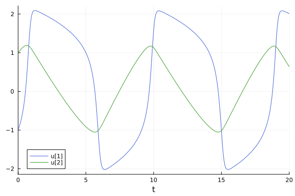
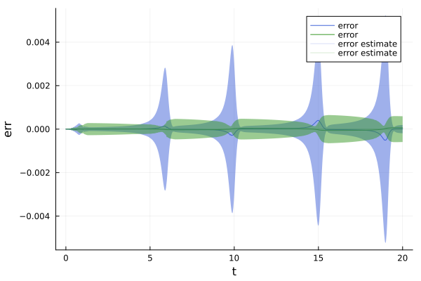

Solving ODEs with Probabilistic Numerics
In this tutorial we solve a simple non-linear ordinary differential equation (ODE) with the probabilistic numerical ODE solvers implemented in this package.
If you never used DifferentialEquations.jl, check out their "Getting Started with Differential Equations in Julia" tutorial. It explains how to define and solve ODE problems and how to analyze the solution, so it's a great starting point. Most of ProbNumDiffEq.jl works exactly as you would expect from DifferentialEquations.jl – just with some added uncertainties and related functionality on top!
In this tutorial, we consider a Fitzhugh-Nagumo model described by an ODE of the form
\[\begin{aligned} \dot{y}_1 &= c (y_1 - \frac{y_1^3}{3} + y_2) \\ \dot{y}_2 &= -\frac{1}{c} (y_1 - a - b y_2) \end{aligned}\]
on a time span $t \in [0, T]$, with initial value $y(0) = y_0$. In the following, we
- define the problem with explicit choices of initial values, integration domains, and parameters,
- solve the problem with our ODE filters, and
- visualize the results and the corresponding uncertainties.
TL;DR: Just use DifferentialEquations.jl with the EK1 algorithm
using ProbNumDiffEq, Plotsfunction fitz(du, u, p, t) a, b, c = p du[1] = c * (u[1] - u[1]^3 / 3 + u[2]) du[2] = -(1 / c) * (u[1] - a - b * u[2])endu0 = [-1.0; 1.0]tspan = (0.0, 20.0)p = (0.2, 0.2, 3.0)prob = ODEProblem(fitz, u0, tspan, p)sol = solve(prob, EK1())plot(sol)
Step 1: Define the problem
First, import ProbNumDiffEq.jl
using ProbNumDiffEqThen, set up the ODEProblem exactly as you would in DifferentialEquations.jl. Define the vector field
function fitz(du, u, p, t) a, b, c = p du[1] = c * (u[1] - u[1]^3 / 3 + u[2]) du[2] = -(1 / c) * (u[1] - a - b * u[2])endand then the ODEProblem, with initial value u0, time span tspan, and parameters p
u0 = [-1.0; 1.0]tspan = (0.0, 20.0)p = (0.2, 0.2, 3.0)prob = ODEProblem(fitz, u0, tspan, p)Step 2: Solve the problem
To solve the ODE we just use DifferentialEquations.jl's solve interface, together with one of the algorithms implemented in this package. For now, let's use EK1:
sol = solve(prob, EK1())retcode: Success
Interpolation: ODE Filter Posterior
t: 267-element Vector{Float64}:
0.0
0.021276864853851562
0.055300624266158616
0.09069833746250563
0.13926827172051978
0.1848666961349729
0.24179365422080168
0.29051815606977655
0.34907692582629263
0.3957155206942215
⋮
19.518854680710966
19.561981288035003
19.608741106665452
19.65917181315088
19.714799009084633
19.776336559627467
19.845328001901446
19.923656800908997
20.0
u: 267-element Vector{Vector{Float64}}:
[-1.0, 1.0]
[-0.978397898660811, 1.0098599972789515]
[-0.9424079102235076, 1.0253304284951825]
[-0.9028542932161308, 1.041017074266352]
[-0.844534969189886, 1.0618117205851596]
[-0.7847703402715182, 1.0804970291748714]
[-0.7018976845401028, 1.1025562952859267]
[-0.6220689316718372, 1.1201790748659057]
[-0.5125846286367806, 1.1395948391043396]
[-0.412302418512718, 1.153475975681628]
⋮
[2.0831421856443617, 0.910282861736622]
[2.079680911263999, 0.8858165418225491]
[2.074402928520177, 0.8592781944423283]
[2.0675757044597525, 0.8306659366906523]
[2.0591910014820893, 0.799135293762211]
[2.0492704141263145, 0.7643064141038756]
[2.0376451526713155, 0.7253370737854458]
[2.0240273641987008, 0.6812062164308896]
[2.010441422714795, 0.6383189771605194]That's it! we just computed a probabilistic numerical ODE solution!
Step 3: Analyze the solution
Let's plot the result with Plots.jl.
using Plotsplot(sol)Looks good! Looks like the EK1 managed to solve the Fitzhugh-Nagumo problem quite well.
To learn more about plotting ODE solutions, check out the plotting tutorial for DifferentialEquations.jl + Plots.jl provided here. Most of that works exactly as expected with ProbNumDiffEq.jl.
Plot the probabilistic error estimates
The plot above looks like a standard ODE solution – but it's not! The numerical errors are just so small that we can't see them in the plot, and the probabilistic error estimates are too. We can visualize them by plotting the errors and error estimates directly:
using OrdinaryDiffEq, Statisticsreference = solve(prob, Vern9(), abstol=1e-9, reltol=1e-9, saveat=sol.t)errors = reduce(hcat, mean.(sol.pu) .- reference.u)'error_estimates = reduce(hcat, std.(sol.pu))'plot(sol.t, errors, label="error", color=[1 2], xlabel="t", ylabel="err")plot!(sol.t, zero(errors), ribbon=3error_estimates, label="error estimate", color=[1 2], alpha=0.2)
More about the ProbabilisticODESolution
The solution object returned by ProbNumDiffEq.jl mostly behaves just like any other ODESolution in DifferentialEquations.jl – with some added uncertainties and related functionality on top. The ProbabilisticODESolution can be indexed with
julia> sol.u[1]2-element Vector{Float64}: -1.0 1.0julia> sol.u[end]2-element Vector{Float64}: 2.010441422714795 0.6383189771605194julia> sol.t[end]20.0But since sol is a probabilistic numerical ODE solution, it contains a Gaussian distributions over solution values. The marginals of this posterior are stored in sol.pu:
julia> sol.pu[end]Gaussian{Vector{Float64},PSDMatrix{Float64, Matrix{Float64}}}( μ=[2.010441422714795, 0.6383189771605194], Σ=2x2 PSDMatrix{Float64, Matrix{Float64}}; R=[3.005947980305731e-5 9.303442643929447e-5; 4.857272834170173e-5 0.00015192375417395244; -2.7758133520974727e-5 -8.23944372090322e-5; -1.1647930562832576e-6 -2.1095724558368057e-5; 0.0 0.0; 0.0 0.0; 0.0 0.0; 0.0 0.0])You can compute means, covariances, and standard deviations via Statistics.jl:
julia> using Statisticsjulia> mean(sol.pu[5])2-element Vector{Float64}: -0.844534969189886 1.0618117205851596julia> cov(sol.pu[5])2x2 PSDMatrix{Float64, Matrix{Float64}} Right square root: R=8×2 Matrix{Float64}: -2.8014e-6 -1.24815e-7 0.0 2.74772e-6 0.0 0.0 0.0 0.0 0.0 0.0 0.0 0.0 0.0 0.0 0.0 0.0julia> std(sol.pu[5])2-element Vector{Float64}: 2.80139953184221e-6 2.7505525857957724e-6Dense output
Probabilistic numerical ODE solvers approximate the posterior distribution
\[p \Big( y(t) ~\big|~ y(0) = y_0, \{ \dot{y}(t_i) = f_\theta(y(t_i), t_i) \} \Big),\]
which describes a posterior not just for the discrete steps but for any $t$ in the continuous space $t \in [0, T]$; in classic ODE solvers, this is also known as "interpolation" or "dense output". The probabilistic solutions returned by our solvers can be interpolated as usual by treating them as functions, but they return Gaussian distributions
julia> sol(0.45)Gaussian{Vector{Float64},PSDMatrix{Float64, Matrix{Float64}}}( μ=[-0.27738212726945966, 1.1675659401599634], Σ=2x2 PSDMatrix{Float64, Matrix{Float64}}; R=[-3.2083509416039426e-5 -4.789964676252974e-6; 0.0 -2.420638752413463e-5; 0.0 0.0; 0.0 0.0; 0.0 0.0; 0.0 0.0; 0.0 0.0; 0.0 0.0])julia> mean(sol(0.45))2-element Vector{Float64}: -0.27738212726945966 1.1675659401599634Next steps
Check out one of the other tutorials:
- "Second Order ODEs and Energy Preservation" explains how to solve second-order ODEs more efficiently while also better preserving energy or other conserved quantities;
- "Solving DAEs with Probabilistic Numerics" demonstrates how to solve differential algebraic equations in a probabilistic numerical way.